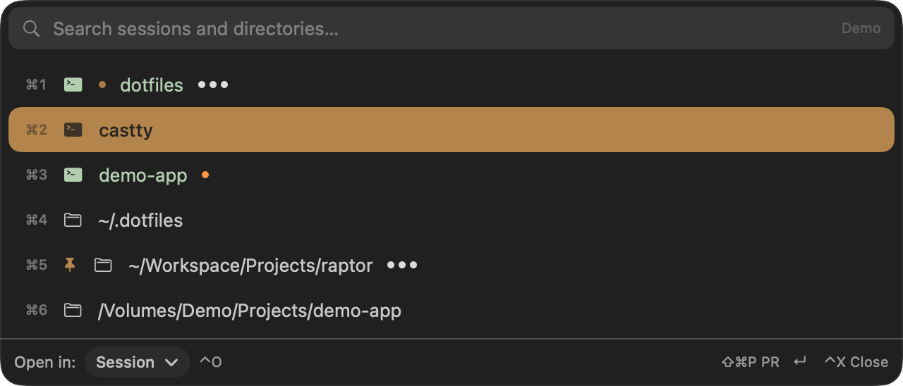
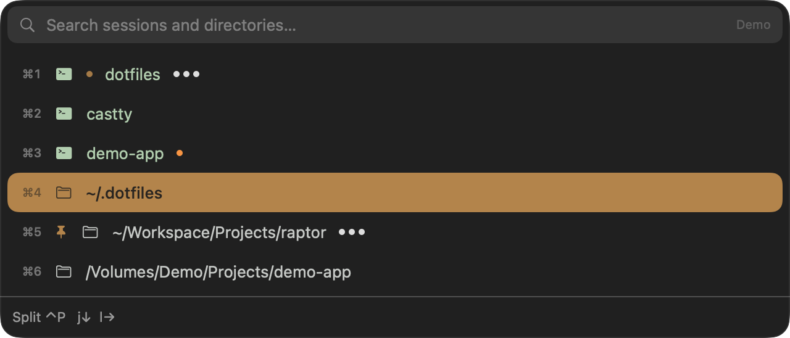
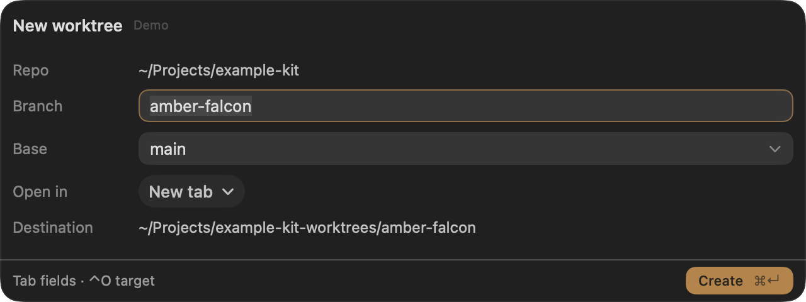

Raptor · Native macOS showcase
System fonts and keyboard controls. Native views with synthetic project names, paths, and output.

Sessions and directories
Resume a session or open a project. The default selection skips the current session when another destination is available.

Split mode
Ctrl+P starts directional splitting. Use H/J/K/L or arrows; Escape cancels.

Create worktree
Choose a branch and base, preview the destination, then create and open. Opening can be retried without creating again.
Mac and terminal interfaces share Go search, worktree creation, and Rex action logic. Synthetic renders do not change live sessions or Git worktrees.